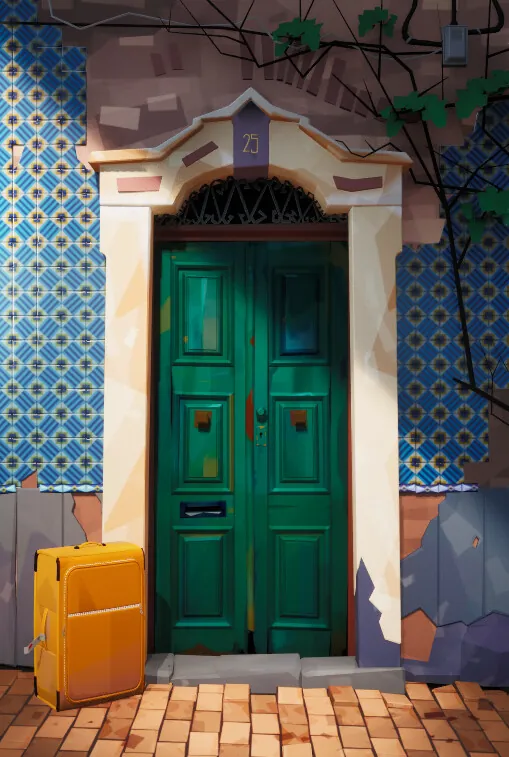
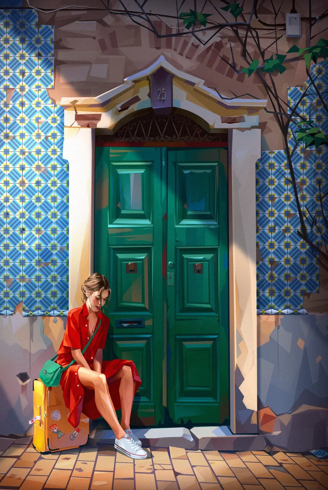
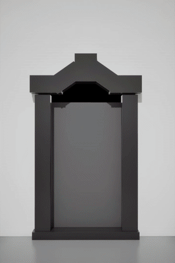

UE Style Study
I recently stumbled on the beautiful works of Azamat Khairov and knew I had to try recreating one of the pieces in UE5. It was a fun challenge and good Designer and Painter practice, which is always welcome.
- Role
- Personal study
- Context
- Personal work
- Tools
- Unreal Engine, Blender, Substance 3D Painter, Substance 3D Designer
Credits
- Based on "expectation 3" by Azamat Khairov





